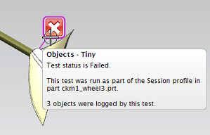
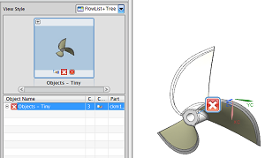
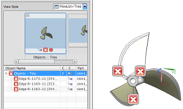
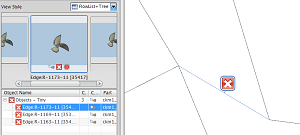
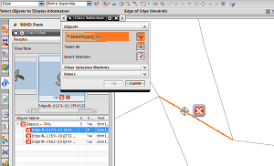

在结果树中，收起对象 — 微小的节点。
在图形窗口中，将光标悬浮在错误标签 上并查看弹出的报告。

双击该错误标签 。
在 Check-Mate 结果窗口中查看信息。
如果显示的是较少的信息，请点击更多细节。
测试状态显示部件中包含三个微小几何体对象。
滚动至 Check-Mate 结果窗口的底部并查看测试参数，日志附加消息一节中显示了您先前输入的文本，表示指定的距离公差0.0025为用户定义的参数。
关闭 Check-Mate 结果窗口。
在结果树中，右击对象 — 微小的节点并选择设为显示部件。

展开对象 — 微小的节点。

右击其中一个边：R...节点并选择关注标记视图。

选择信息→对象。
您可能会收到一条关于“高亮显示原始特征”已经被抑制的警报信息，如果收到，请关闭或忽略该消息。
在选择条上的类型过滤器列表中，选择边。
在图形窗口中，选择错误标签附着的边。

在类选择对话框中，点击确定。
将打开信息窗口并显示信息单位为英寸，并且这条边为相交曲线，长度大约为0.00176。
该长度小于测试对象 — 微小的的距离临界公差。
关闭信息窗口。
查看其它两条检查失败的边的信息。